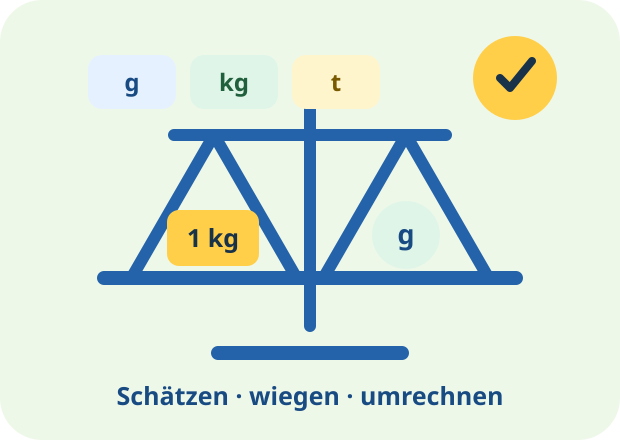

Mathe Klasse 3
Was möchtest du heute lernen?
Wähle ein Thema. Jedes Lernpaket erklärt zuerst die wichtigsten Regeln und begleitet dich danach mit Mila und Ben durch interaktive Aufgaben.

Deine Themen
Gewichte
35 Übungen zu Gramm, Kilogramm, Tonne, Umrechnen und Sachaufgaben.
Lernpaket starten →Zahlenraum bis 1.000
Stellenwerte, Zahlenstrahl, Nachbarzahlen, Ordnen, Runden und Muster.
Lernpaket starten →Längen
35 Übungen, Lernsterne und ein Abschlusstest zu mm, cm, dm, m und km.
Lernpaket starten →Halbschriftlich rechnen
35 Übungen, Lernsterne und ein Abschlusstest zur Multiplikation und Division.
Lernpaket starten →🚀 Heute ein kleiner Lernschritt – morgen schon ein großer Erfolg!